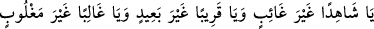
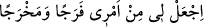

açtırmıştı. Kuyunun üstü dar; altı genişti.
Kâşifî der ki: Kuyunun derinliği yetmiş arşın veya daha fazlaydı.
Yûsuf’u bu kuyunun başına getirdiler. Yûsuf kardeşlerinin elbiselerine tutunmaya
çalışıyor, kardeşleri ise elbiselerini onun elinden çekip alıyordu. Yûsuf’u beline
bağladıkları bir iple aşağı sarkıtmak isterlerken o, kuyunun ağzına tutunmaya
çalışıyordu. Bunun üzerine ellerini bağladılar. Babasını aldatmak üzere yalandan bir
kana bulamaya karar verdikleri için gömleğini de çıkardılar.
Buna karşılık Yûsuf: “Ah kardeşlerim! Gömleğimi bari geri verin de yaşarken
bedenimi örteyim, öldükten sonra da kefenim olsun.” diye yalvardıysa da bunu
yapmadılar. Yûsuf kuyunun ortasına geldiğinde belindeki ipi koparıp ölsün diye attılar.
Kuyuda su olduğu için suya düştü. Sonra da kuyunun yan tarafında bulunan bir kayaya
sığındı, ağlayarak kayanın üzerine çıktı. Kardeşleri kendisine bağırınca, acıdıklarını
sanarak cevap verdi. Yaşadığını anlayınca üzerine taş atmak istedilerse de Yahuda buna
mâni oldu.
Kâşifî der ki: “Hazret-i Mele-i A‘lâ’dan sidretü’l-müntehâda olan Cebrâil (a.s.)’a
“Cibrîl, kuluma yetiş!” diye hitap ulaştı. Yûsuf kuyunun dibine ulaşmadan Cibrîl ona
ulaştı. Yûsuf’u mukaddes kanadıyla tuttu. Kuyunun dibinde olan bir taşın üzerine oturttu.
Ona cennet yiyecek ve içeceklerinden verdi. Yâkub (a.s.)’ın koluna muska gibi
bağladığı Hz. İbrahim’in gömleğini çözüp üzerine örttü.”
Hasan (Basrî) der ki: “Yûsuf kuyuya on iki yaşındayken atıldı. Babasına seksen sene
sonra kavuştu. Yûsuf atıldığında on yedi ve on sekiz yaşında olduğuna dair rivâyetler de
vardır.
Rivâyete göre kuyuda yaşayan haşereler birbirlerine ‘Yuvalarınızdan çıkmayın. Çünkü
civarınıza bir peygamber misafir gelmiş bulunuyor.’ dediler. Yılan dışındakiler buna
uyarak ortada dolaşmadı, ancak yılan Yûsuf’a doğru yöneldi. Cebrail (a.s.) ona
bağırınca yılan sağırlaştı ve bu sağırlık yılan neslinde devam edegeldi.
Yûsuf kuyuya atılınca şöyle duâ etti:
“Ey gâib olmayan şâhid! Ey uzak olmayan yakın! Ey mağlûb olmayan gâlip! Şu
içinde bulunduğum durumdan kurtulup çıkmamı nasip eyle!” Bir rivâyete göre ise
“Beni bu içinde bulunduğum durumdan kurtar.” diye duâ etti. Onun için kuyuda fazla
kalmadı.
Kevâşî der ki: “Yûsuf kuyuda üç gün kaldı. Bir saat içinde oradan çıktığı da
söylenmiştir.”
Cebrail (a.s.) Yûsuf’a kuyudayken şu duâyı öğretti: